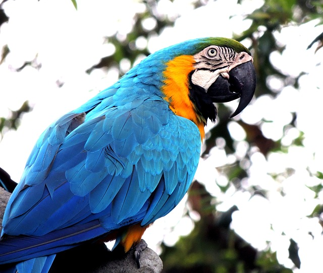
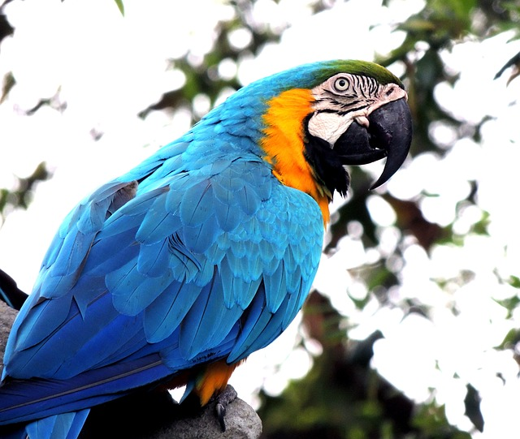

A key part of our mission is having great information available for you. TPM covers all kinds of companion animals. We have lots of features on dogs and cats. But we also have items on more unusual pets, like stick bugs and chickens. TPM knows that everybody loves their companion animal. It doesn’t matter what species you have.
The Pet Matchmaker will bring you all the information you need to:
Plan for your pet.
Search for your pet.
Care for your pet their entire lives.
If you’ve already got your purrrfect companion animal, we can still help. Your animal’s needs will change throughout her life. A puppy has different needs than a senior dog. A kitten likes different things than a cat. Even fish change as they age! TPM will offer you resources for every stage of your pet’s life.

 
